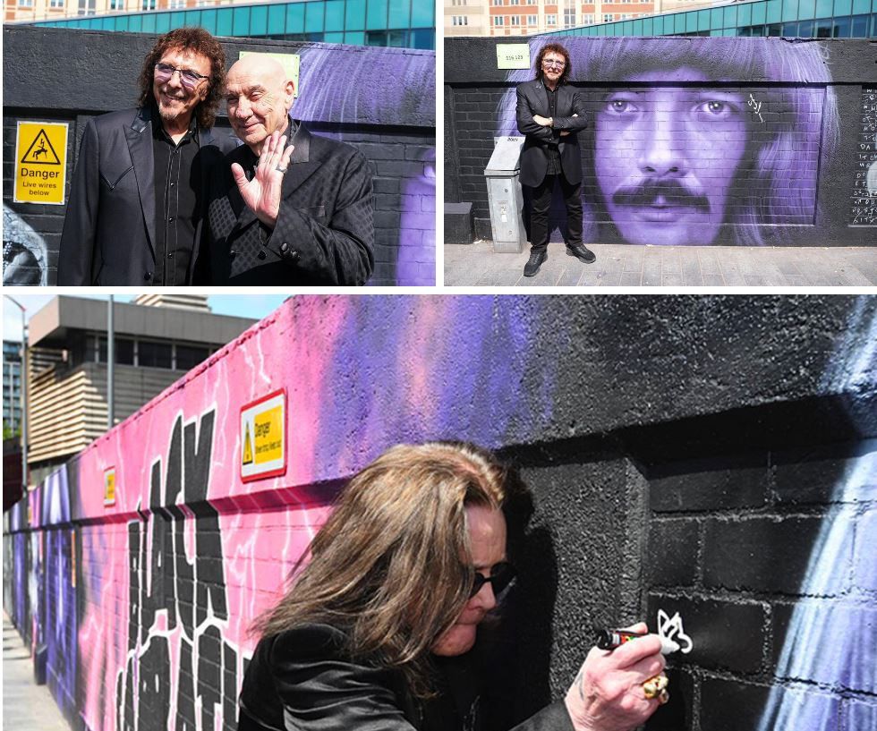

The End of an Era
Black Sabbath's Final Concert
July 5, 2025, Villa Park Stadium, Birmingham, England

The Historic Reunion
- Original lineup: Ozzy Osbourne, Tony Iommi, Geezer Butler, Bill Ward
- First reunion since 2005, after 20 years
- A monumental moment for heavy metal fans

The Venue: Villa Park
- Home of Aston Villa FC in Birmingham
- Black Sabbath formed in Aston in 1968
- Emotional significance for the farewell

All-Star Lineup
- Featured Metallica, Slayer, Pantera, Guns N’ Roses, Tool, and more
- Curated by musical director Tom Morello
- A celebration of heavy metal’s finest

Ozzy Osbourne’s Final Bow
- Ozzy performed seated on a black winged throne with skulls
- Solo set followed by Black Sabbath performance
- Emotional farewell due to Parkinson’s challenges

The Setlist
- Black Sabbath: “War Pigs,” “NIB,” “Iron Man,” “Paranoid”
- Ozzy’s solo set: “Crazy Train,” “Suicide Solution”

Emotional Highlights
- Fans wept as confetti cannons and fireworks lit the sky
- Ozzy: “Thank you from the bottom of our hearts”
- Jason Momoa jumping into the moshpit during the "Back To The Beginning

Charity and Impact
- £140 million donated to Cure Parkinson’s and children’s charities
- 300,000 tourists boosted West Midlands economy by £20 million

Global Reach
- Livestreamed globally with a two-hour delay
- Peaked at 5.8 million concurrent streams
- Fans worldwide joined via pay-per-view
Legacy of Black Sabbath
- Pioneers of heavy metal, formed in 1968
- Sold over 75 million albums
- “The greatest heavy metal show ever”
